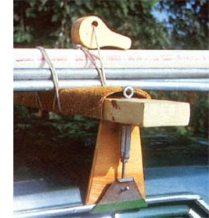
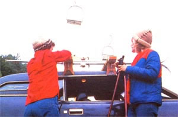
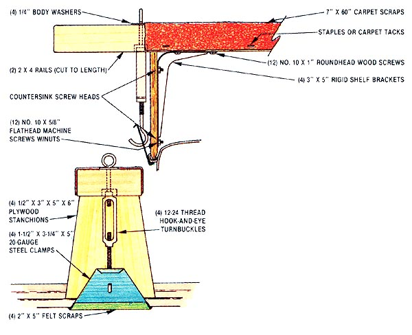

Solve those hauling problems quickly with . . .
Unwieldy objects can be just about impossible to carry in cars . . . and, should you try to cram such items in, your efforts will more than likely be rewarded with ripped upholstery or damaged hardware. Granted, modern hatchbacks do provide a fair bit of hauling capacity, but their limited size often seems to preclude the portage of anything longer than a yardstick.
Well, if you've had problems transporting things during your building projects, camping trips, and so forth, you might want to think about constructing our basic utility rack. For an investment of about $10, you can have a piece of equipment that's custom-fitted to your auto and that will allow you to handle those occasional hauling jobs you'd never have considered undertaking before. The unit is, of course, removable, and though it's not as pretty as the fancy tubular kind that can buy in many stores, it's every bit' as functional.
Actually, this project started out to be a budget ski rack . . . but after some preliminary fitting, we realized that the device had a lot of unexplored potential, so we decided to make it a universal carrier. Before you start breaking out your building tools, though, do take a good look at your car's roof: It must have a permanent rain trough running along each edge if it's to support the rack's stanchions and clamps.
Once you're certain that your vehicle will accept the stands, you can go out and gather the necessary materials: four 3" X 5" rigid shelf brackets . . . an equal number of hook and-eye turnbuckles (ours had 12-24 threads and were adjustable between 5-3/8" and 7-1/2") . . . a piece of 1/2" plywood measuring at least 8` X 12" or 6" X 16" . . . a section of 18- or 20-gauge sheet metal with 6-1/2" X 6-1/2" dimensions . . . two 6'-long 2 X 4's . . . enough carpet scrap to pad those boards (a 7" X 60" piece will do) . . . and four 2" X 5" samples of felt cloth. The required fastening hardware includes a dozen No. 10 X 5/8" flathead machine screws with nuts, twelve more No. 10 X 1" roundhead wood screws, four 1/4" body washers, and a handful of staples or carpet tacks.
Begin the assembly process by measuring the exact distance between the two rain troughs on your car, first at a spot toward the front of the roof, and then at one to the rear. (The spans at these two stanchion-mounting points will vary, depending on the size of your vehicle.) Once you've determined the breadth at each of the two locations-it's possible that the two measurements might be different you can cut your 2 X 4's to the necessary lengths (leaving 12" on each board to allow for about a 6" overhang at the ends), and mark one face of each rail to indicate where the stanchions will be attached.
With that done, cut the four 3" X 5" X 6" stanchions out of your 1/2" plywood blank. If you need additional roof clearance, you can increase the length of these stands a bit, but in any case, you should leave each one's shortest edge flat, smooth the two sides, and shape the broad edge (the one that rests in the gutter) into a point with two bevels, using a rasp and some sandpaper.
Now, position each of these stanchions on the lines you previously marked on the 2 X 4's, and lay the shelf brackets-legs inward-against both the plywood and the 2 X 4 it's resting upon. Use a pencil to indicate the mounting holes, drill them, and countersink the holes at the points where they exit the stands' outward faces. (The wood screws will require 1/8" holes, and the machine fasteners need 7132' openings.)
Before attaching these pieces permanently, make things easier for yourself by fly cutting 1 " holes-centered and 1 inch to the outside of each marked line-into the 2 X 4's . . . boring to a depth of 1/2" and then continuing all the way through the board using a 1/4" bit. Now, when you've joined the brackets and the stanchions (remember to seal or paint the raw lumber first), you can go ahead and slip the turnbuckles-ring end and body washers up-through the holes (the countersunk relief's underneath will allow a full range of adjustment when tightening the sheet metal clamps).
Those steel grippers, by the way, are easily made by first snipping four 1-1/2" X 3-1/4" X 5" billets from the 6-1/2" square, then bending the longest and shortest edges of each clamp in a vise to form opposing 1/4" lips. (Since you want these bends to assume a "hook" shape, you can use the vise to make a right angle, then finish the shaping with a ball peen hammer.) If you go on to bore a 1/4" hole through each clamp, and glue some felt to the metal's broad grabbing ends, you'll turn the pieces into utilitarian clinchers that are just perfect for pulling the stanchions tightly against the rain troughs.
All that's left at this point is to cut up your carpet scrap and staple or tack it to the upper surface of the 2 X 4 cross rails, between the protruding eyebolts. You can either use the eyes and some elastic tie-down straps to secure your load, or simply get a length of rope and give the wooden cam clamps shown in the photograph a try. (Each is nothing more than a 2-1/2" X 5" hunk of 2 X 4, cut in such a way that it has a handle on one end and a 2-1/2"-diameter "bulb" on the other. The rope passes through a hole near the side of the bulb, and when the merchandise is tied tightly to the rack-with the clamp on top that cam can be locked over center and against the knot to draw the entire bundle together.) Once you start using it, your rack's versatility will probably surprise you . . . and even outsized loads will cease to be a problem, providing they're not too heavy.
|
 |
 |
 |